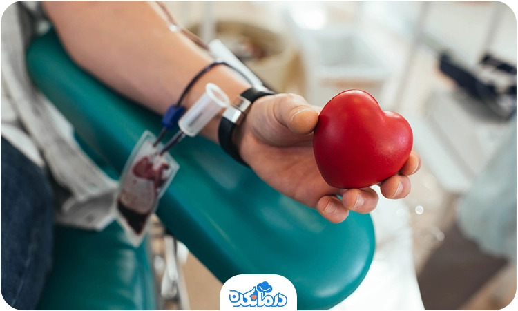
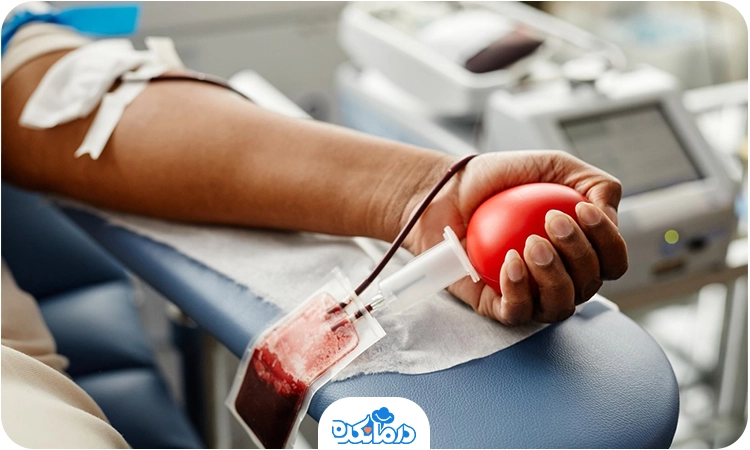

اهدای خون یکی از سادهترین و در عین حال موثرترین راهها برای نجات جان انسانها است. در جهانی که هر لحظه ممکن است فردی به دلیل سانحه، جراحی یا بیماریهای خاص به خون نیاز پیدا کند، این عمل انساندوستانه کمک بزرگی میکند. شاید در نگاه اول به نظر برسد که اهدا خون تنها یک حرکت کوچک است، اما تاثیر آن در برخی مواقع فراتر از تصور ماست. چرا که هر واحد خون اهداشده میتواند زندگی یک یا چند نفر را از مرگ حتمی نجات دهد. این اقدام نه تنها یک کار خیرخواهانه در جامعه بهشمار میآید، بلکه برای سلامت خود فرد اهداکننده هم فواید زیادی دارد.

خون اهدایی شما می تواند جان سه نفر را نجات دهد. این کار علاوه بر اینکه به نجات جان دیگران کمک میکند، برای بدن فرد اهداکننده مزایای متعددی دارد؛ از جمله
تحریک سلولهای خونی
پس از اهدای خون، مغز استخوان برای جبران سلولهای خونی از دست رفته وارد عمل میشود
این امر میتواند تولید سلولهای خونی را تحریک کند و موجب بهبود عملکرد گردش خون و در نهایت سلامت کلی بدن شود.
تنظیم سطح آهن بدن
آهن یک ماده حیاتی در بدن است که به عملکرد صحیح آن کمک میکند، اما تجمع بیش از حد آهن در بدن میتواند منجر به بروز برخی مشکلات جدی شود.
اهدای خون به تنظیم سطح آهن در بدن کمک میکند و مانع از تجمع بیش از حد آن میشود.
پیشگیری از بیماریهای قلبی و عروقی
سطح بالای آهن در بدن میتواند باعث بروز بیماریهای قلبی و عروقی شود؛ زیرا آهن اضافی بدن ممکن است رادیکالهای آزاد ایجاد کند و در نتیجه به سلولهای قلب و عروق آسیب برساند.
انتقال خون به تنظیم سطح آهن در بدن کمک میکند و مانع از بروز مشکلات قلبی و عروقی میشود.

لینک سایت اهدای خون